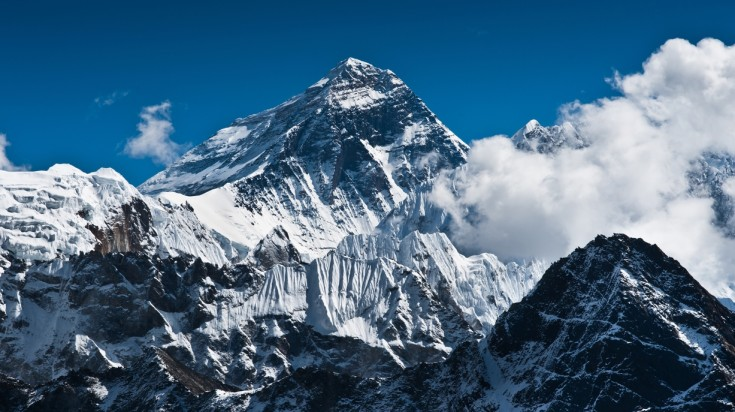
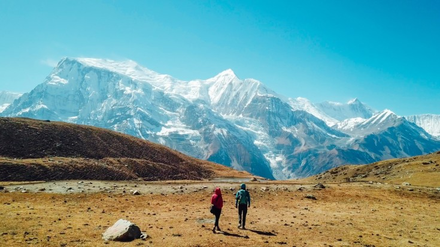
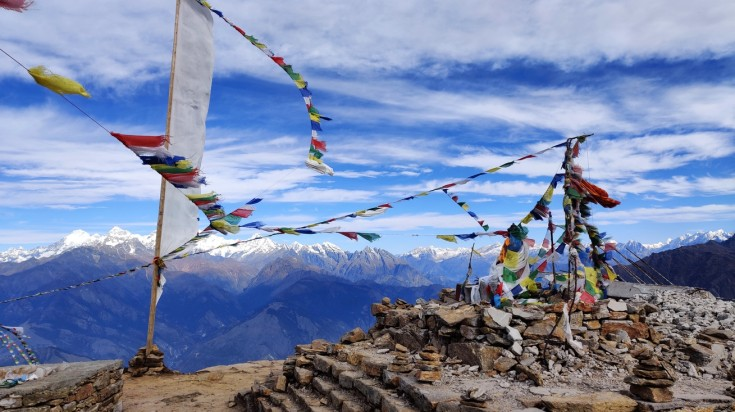
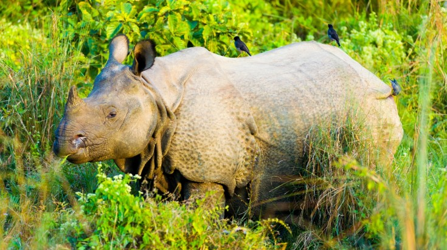
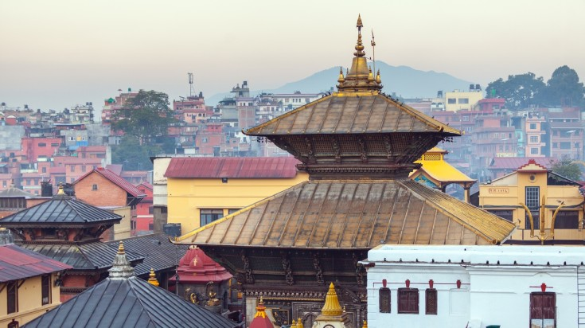

1. EVEREST REGION

Head for the base camp trek in the Everest Region of Nepal.
Nepal’s Everest Region is home to remote trails dotted with Buddhist monasteries, stunning mountain views, and unique Himalayan culture. Some of Nepal’s best-known treks, like the Everest Base Camp trek, happen here. Lukla is the main entry point for visitors and trekkers to the Everest Region. Expect plenty of lodges and local eateries along the way.
Highlights:
Trek the three great passes on an Everest Base Camp trek: Kongma La, Cho La and Renjo La.
Visit Sagarmatha National Park Visitor’s Centre, which has information about the area’s wildlife.
Spend a day acclimatizing in Namche Bazaar. Explore the Museum of Sherpa Life, hike to a lookout to see Everest.
2. ANNAPURNA REGION

The Annapurna Region is one of the top trekking destinations in Nepal.
The spectacular Annapurna Region offers some of the best trekking routes in Nepal. The region’s most popular trekking route is the beautiful Annapurna Base Camp. For expert mountaineers, there is the grand Annapurna itself, but there are also many smaller treks and trails together with cultural detours.
Highlights:
Trek to Annapurna Base Camp, at a height of 4,740 meters. It can be completed in 6–10 days.
Do the Annapurna Circuit Trek, which takes about 14 to 20 days. Thorung La Pass, at 5,416 meters, is the highest point of the trek.
Try Poon Hill or Ghandruk for two relatively shorter and easier treks that still show off mountain views and diverse local culture.
3. LANGTANG

The Langtang Region of Nepal is home to Lake Gosainkunda.
Langtang is best known for its excellent Langtang Valley trek, a relatively gentle-paced trek accessible from Kathmandu. The area is known for its spectacular scenery, indigenous Tamang culture, green forests and bamboo groves. Aside from the main trekking route, there are several day hikes from places like Kyanjin Gompa which offer stunning views of peaks and glaciers such as Lirung (7,246m) and Langshisha Ri (6,370m).
Highlights:
Pass high alpine meadows, lush forests and yak pastures, and enjoy extensive views across open valleys towards the end of the Langtang Valley trek.
Trek Tamang Heritage Trail for a cultural dive into the lives of the local Tamang community.
Try the lovely alternative trek to the beautiful Lake Gosainkunda (4,380m), which is also a pilgrimage spot for sadhus (holy men).
4. CHITWAN NATIONAL PARK

Head to Chitwan National Park and spot one-horned rhinoceros.
Home to around 50 species of mammals, 120 species of fish, 55 species of reptiles and amphibians and 525 species of birds, Chitwan National Park is a top wildlife safari destination.
Highlights:
Enjoy a safari walk or a traditional jeep safari and spot Bengal tigers, clouded leopards, Asian elephants, and the rare one-horned rhino.
Go on a boat safari on Rapti river to see the gharial, a species from the crocodile family with a distinct thin, long snout.
Explore the local Tharu culture via village walks, culture shows, and local artisans.
5. KATHMANDU

Visit Pashupatinath while in Kathmandu.
Pashupatinath sees a lot of Hindu devotees every year.
Head up to Swoyambhunath on your tour to Kathmandu.
Swoyambhunath is also known as the Monkey temple due to the large number of monkeys found in the area.
Busy and bustling Kathmandu is the beating heart of Nepal and a cultural treasure trove making it a top place to visit in Nepal. From heritage and architecture to spirituality and shopping—there’s something for everyone in Kathmandu.
Highlights:
Head to the charmingly chaotic Durbar Square and its Royal Palace, and learn about the city’s history.
Visit the sprawling Pashupatinath Temple, which attracts thousands of Hindu devotees every day.
Explore the most popular Buddhist landmarks of Kathamndu by going on a short hike up Swoyambhunath, the Monkey Temple, and then visiting Bouddhanath, the biggest stupa in Nepal.